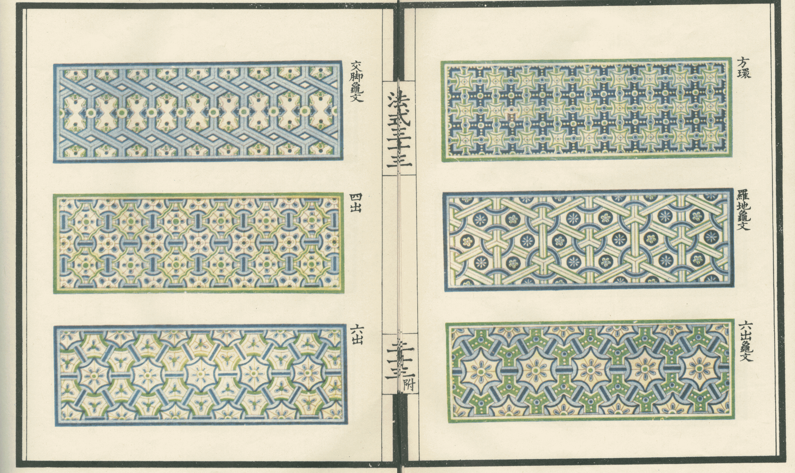

本圖構成素材圖檔參考自李誡 《李明仲營造法式》，並經由系統生成
摘要
重複圖樣按一定規律排列是種常見的裝飾樣式，藉由各圖樣的重複來產生整齊劃一、結構明確的美感。可縮放向量圖形(Scalable Vector Graphics，SVG) 因其伸縮不會失真的特性，特別適合用於容易調整大小的重複圖樣生成處理。部分圖樣儘管本身為二維，但其本身結構上隱含三維結構描述，而SVG 是藉由圖層堆疊來達到部件分層的效果，難以在保持結構的狀況下兼顧編輯便利性，使用者往往須將一個個體當成多個區塊，視作個別圖層處理。因此本文提出一用於向量圖重複圖樣生成的編輯系統，且能夠透過三維值的輸入來處理結構保留、自動分層的問題，且於系統編輯完後，亦能儲存保留編輯能力的專用格式，便於再次調整。
